Items
Two hands, a belt, a backpack, two pockets and an EVA suit's storage hold everything you carry.
Items lie on the floor, on tables and racks, and in closets; the maps show them as these pictures. Furniture and machines are on the Furniture and devices page.
- Tools and repair (63)
- Medical (18)
- Food, drink and plants (74)
- Power and solar (19)
- Paperwork and books (19)
- Clothing and gear (29)
- Everything else (5)
Tools and repair
| Item | What it does | Where to get one | |
|---|---|---|---|
| Wire cutters | Cuts the cable on your tile or the one you face. Everything behind the cut loses power. It cuts only cable that lies open: lift the floor tile first. | Transformer Room, Atmospherics, Electrical Workshop (2), Construction Workshop, Machine Workshop (3), in a storage crate in the Maint. Tunnels by Robotics, in a storage crate in the Maint. Tunnels by Power Tube, in a storage crate in the Maint. Tunnels by Chemistry, in a closet in the Maint. Tunnels by Janitor, Station Engineer's kit | |
| Cable coil | Lays cable on the floor you stand on, where it lies open: in a maintenance tunnel or under a lifted floor tile. Closing a gap in a cable line brings the power back. | Maint. Tunnels by Robotics, Maint. Tunnels by EVA Airlock 2, Maint. Tunnels by South Tube, Maint. Tunnels by Restroom, Maint. Tunnels by Cargo Storage, Inverter Room, Battery Room, Atmospherics, Electrical Workshop (2), Construction Workshop (2), Machine Workshop (2), in a closet in the Cargo Storage Bay, in a closet in the Crew Quarters, in a storage crate in the Maint. Tunnels by Solar Control (2), in a storage crate in the Maint. Tunnels by Power Tube, in a storage crate in the Maint. Tunnels by Atmospherics, in a storage crate in the Maint. Tunnels by Chemistry, in a storage crate in the Maint. Tunnels by Quarters Tube, in a closet in the Maint. Tunnels by East Tube, in a storage crate in the Maint. Tunnels by Cargo Reception, Station Engineer's kit, request console order (3 points) | |
| Crowbar | Forces a door open: one without power, or one the pressure lock sealed. It lifts the floor tile on your tile or the one you face (2 seconds, with your other hand free): the tile goes into that hand. Against an outer wall it strips the plating off (4 seconds), the first step of opening the hull: the plating drops as a hull plate. | Atmospherics, Construction Workshop (2), Machine Workshop, Maint. Tunnels by Bridge, Maint. Tunnels by Robotics, Maint. Tunnels by Atmospherics, in a closet in the Crew Quarters, in a storage crate in the Maint. Tunnels by EVA Airlock 2, in a storage crate in the Maint. Tunnels by Cargo Reception, in a storage crate in the Maint. Tunnels by South Tube, in a closet in the Maint. Tunnels by Janitor, Station Engineer's kit, Logistics's kit | |
| Hull plate | Patches a hull breach when you hold it with a welder in your other hand, puts the plating back on a stripped wall and patches a cracked one (6 seconds). It is used up. Stripping a wall drops one. | Cargo Reception (2), Robotics (4), Maint. Tunnels by Bridge, Maint. Tunnels by Cargo Storage, Construction Workshop (6), Machine Workshop (7), in a closet in the Cargo Storage Bay, in a closet in the Construction Workshop, in a storage crate in the Maint. Tunnels by Robotics (2), in a closet in the Maint. Tunnels by Power Tube, in a storage crate in the Maint. Tunnels by EVA Airlock 2, in a storage crate in the Maint. Tunnels by Atmospherics, in a storage crate in the Maint. Tunnels by Chemistry, in a storage crate in the Maint. Tunnels by South Tube, in a storage crate in the Maint. Tunnels by Restroom, Roboticist's kit, request console order (5 points) | |
| Welder | Welds a hull plate over a breach or over stripped plating: hold the plate in the active hand and the welder in the other. With a welder in the active hand it also cuts through a wall whose plating was stripped (6 seconds), which opens the hull to space, and reinforces a worn wall by itself (4 seconds). | Construction Workshop, Machine Workshop (2), in a closet in the Construction Workshop, Station Engineer's kit | |
| Screwdriver | Opens a door's maintenance panel, and closes it again (2 seconds). Stand next to the door and hold the screwdriver in the active hand; no access is needed. The wires inside are for wirecutters, a cable coil and a multitool. | Inverter Room, Battery Room, Atmospherics, Electrical Workshop (2), Machine Workshop (2), Maint. Tunnels by Cargo Storage, in a storage crate in the Maint. Tunnels by Solar Control, in a storage crate in the Maint. Tunnels by Atmospherics, in a closet in the Maint. Tunnels by East Tube, in a storage crate in the Maint. Tunnels by Quarters Tube, Station Engineer's kit, Roboticist's kit | |
| Multitool | Pulses a wire in an open door panel, which is how a door is bolted, unbolted, tested or opened without a card: it does something to the bolts, bolt light and opening wires; a pulse on the others does nothing. | Transformer Room, Atmospherics, Electrical Workshop (2), Machine Workshop, Station Engineer's kit, Scientist's kit | |
| T-ray scanner | Hold it in a hand and the cables under the floor tiles within 6 tiles show on your screen, framed in cyan, and on a map with a pipe plant (Heron) the pipes there too, framed in green; put it away and they vanish. Only you see them. To cut, lay or wrench one, lift its tile with a crowbar first. | Construction Workshop, Station Engineer's kit | |
| Floor tile | What a crowbar lifts from a hallway or department floor. Carry it in a hand or a backpack; with it in the active hand, Lay floor tile covers a lifted tile again and hides the cable below. | Construction Workshop (4) | |
| Wrench | For tightening and loosening bolts. Nothing takes it yet: the pipes and the furniture bolts to come will. It rides on the toolbelt with the other tools and is on the shelf of the machine workshop. | Atmospherics (3), Electrical Workshop, Construction Workshop, Machine Workshop, Maint. Tunnels by West Tube, Maint. Tunnels by Chemistry, in a storage crate in the Maint. Tunnels by Power Tube, in a storage crate in the Maint. Tunnels by Restroom, in a storage crate in the Maint. Tunnels by Hub, in a storage crate in the Maint. Tunnels by Solar Control, in a closet in the Maint. Tunnels by East Tube, Station Engineer's kit, Scientist's kit | |
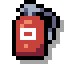 | Fire extinguisher | Hold it and tap Spray: a short white mist in front of you that everyone in view sees. It is harmless and puts nothing out yet: real fires come with the atmospherics' fire stage, and then this is the tool for them. Too big for a pocket; it rides in the backpack. It lies in the maintenance tunnels. | Maint. Tunnels by Bridge, Maint. Tunnels by Atmospherics, Maint. Tunnels by West Tube, Atmospherics, in a closet in the Maint. Tunnels by Robotics, in a closet in the Maint. Tunnels by Power Tube, in a storage crate in the Maint. Tunnels by Hub, in a storage crate in the Maint. Tunnels by Chemistry, in a storage crate in the Maint. Tunnels by South Tube, in a storage crate in the Maint. Tunnels by Restroom, in a closet in the Maint. Tunnels by Janitor, in a closet in the Atmospherics |
| Candle | Hold it and tap Light candle (Snuff candle puts it out): a small flame that lights 2 tiles round it. A lit candle burns on wherever it is put down: on the floor, a table or a rack, so it makes a lamp. In a pocket, the bag or a crate it is out. It never burns down. The Chapel altar holds two, lit from the start; more lie in the maintenance tunnels. Small enough for a pocket. | Maint. Tunnels by EVA Airlock 2, Maint. Tunnels by Chemistry, Maint. Tunnels by South Tube, Chapel (2), Crew Quarters (3), in a storage crate in the Maint. Tunnels by Robotics, in a closet in the Maint. Tunnels by Bridge, in a closet in the Maint. Tunnels by Power Tube, in a closet in the Maint. Tunnels by Hub, in a storage crate in the Maint. Tunnels by Atmospherics, in a storage crate in the Maint. Tunnels by Quarters Tube (2), in a closet in the Maint. Tunnels by East Tube, in a closet in the Maint. Tunnels by Restroom, in a storage crate in the Maint. Tunnels by Cargo Reception, in a closet in the Maint. Tunnels by Janitor | |
| Flashlight | Hold it and tap Light on: it shines 5 tiles round you, for everyone who can see you, and lifts the dark of a room or a tunnel without power around you so you can read it again. It shines while it is in a hand or clipped in a pocket (lit while held or clipped in a pocket, seen by everyone in view; switch it on or off in a hand, a pocket keeps its state). In the bag, on a belt, in a crate, set down or dropped, it is dark. It has no battery. Small enough for a pocket. It lies in the maintenance tunnels' racks, lockers and crates; the miners will carry one too. | Maint. Tunnels by Robotics, Maint. Tunnels by Power Tube, Maint. Tunnels by West Tube, Maint. Tunnels by Cargo Storage, in a storage crate in the Maint. Tunnels by Solar Control, in a storage crate in the Maint. Tunnels by EVA Airlock 2, in a storage crate in the Maint. Tunnels by Hub, in a closet in the Maint. Tunnels by Atmospherics, in a closet in the Maint. Tunnels by Chemistry, in a storage crate in the Maint. Tunnels by South Tube, in a storage crate in the Maint. Tunnels by Restroom, in a closet in the Transformer Room, Crew Member's kit, Captain's kit, Head of Personnel's kit, Security Officer's kit, Janitor's kit, Miner's kit, Roboticist's kit | |
| Shaker | The Bartender's cocktail shaker (it starts in the backpack, and a spare stands on a bar rack). Hold it beside the bar counter (a table beside the mixer) and tap Shake: a short list of 4 cocktails, each from two bottles on the racks within reach. Pick one: 3 seconds of work (half that for the Bartender), and the glass lands on the counter. The bottles are never used up. Drink the glass with Drink (3 seconds). | Bar, Bartender's kit | |
| Squeegee | A long squeegee for the solar arrays. Hold it on the truss beside a dusty panel and tap Clean panel (8 seconds): the panel is wiped back to clean. Dirt settles on every panel all shift and each dusty panel costs the array a little. A rack in the Electrical Workshop keeps two. | Janitor's Closet, Electrical Workshop (2), in a closet in the Restroom, Janitor's kit | |
| Grease can | A can of grease for an array's tracking joint. Hold it on the truss beside the array and tap Grease the joint (8 seconds): it takes the wear off the joint, so the array follows the sun again. A joint that has stuck needs its bolts tightened first (a wrench). A rack in the Electrical Workshop keeps two. | Electrical Workshop (2) | |
| Box of lightbulbs | A cardboard box of spare lightbulbs: a full one holds 6, and it is the same box with fewer in it as bulbs are used (the name says how many are left). Every room has a ceiling lamp whose bulb burns out now and then in a real shift (about one a room in 12 minutes, never more than 3 rooms dark at once): the part of the room more than 3 tiles from its lamp goes dark (a dark socket shows on the lamp). Hold the box beside the lamp and tap Replace bulb (3 seconds). The Janitor's closet has more boxes. | Janitor's Closet (2), Janitor's kit | |
| Thickness gauge | Hold it in a hand or a pocket and the outer walls within 6 tiles show a marker on your screen, through walls, with the plating left on each (green, amber, red). Only you see them. It shows wear before the eye can: a stain is a worn wall, a hairline crack a leak. Reinforce a worn wall with a welder; patch a cracked one with a plate and a welder. A rack in the Construction Workshop keeps one. | Construction Workshop | |
| Watering can (empty) | A watering can: it holds 4 waterings (0 of them now). Fill it at the sink in the greenhouse (Fill can, 3 seconds), then tap Water beside a tray (3 seconds, half that for the Botanist): the tray's water rises by 50. | Botanics (2), Botanist's kit | |
| Watering can (1/4) | A watering can: it holds 4 waterings (1 of them now). Fill it at the sink in the greenhouse (Fill can, 3 seconds), then tap Water beside a tray (3 seconds, half that for the Botanist): the tray's water rises by 50. | — | |
| Watering can (1/2) | A watering can: it holds 4 waterings (2 of them now). Fill it at the sink in the greenhouse (Fill can, 3 seconds), then tap Water beside a tray (3 seconds, half that for the Botanist): the tray's water rises by 50. | — | |
| Watering can (3/4) | A watering can: it holds 4 waterings (3 of them now). Fill it at the sink in the greenhouse (Fill can, 3 seconds), then tap Water beside a tray (3 seconds, half that for the Botanist): the tray's water rises by 50. | — | |
| Watering can | A watering can: it holds 4 waterings (4 of them now). Fill it at the sink in the greenhouse (Fill can, 3 seconds), then tap Water beside a tray (3 seconds, half that for the Botanist): the tray's water rises by 50. | — | |
| Fertilizer sack (1 use) | A fertilizer sack: 5 uses at full (1 left in this one). Tap Fertilize beside a tray (4 seconds, half that for the Botanist): its nutrients rise by 50, and a well fed plant grows faster and gives one more produce. Cargo sells a full sack for 3 supply points; the compost bin fills a sack again. | — | |
| Fertilizer sack (2 uses) | A fertilizer sack: 5 uses at full (2 left in this one). Tap Fertilize beside a tray (4 seconds, half that for the Botanist): its nutrients rise by 50, and a well fed plant grows faster and gives one more produce. Cargo sells a full sack for 3 supply points; the compost bin fills a sack again. | — | |
| Fertilizer sack (3 uses) | A fertilizer sack: 5 uses at full (3 left in this one). Tap Fertilize beside a tray (4 seconds, half that for the Botanist): its nutrients rise by 50, and a well fed plant grows faster and gives one more produce. Cargo sells a full sack for 3 supply points; the compost bin fills a sack again. | — | |
| Fertilizer sack (4 uses) | A fertilizer sack: 5 uses at full (4 left in this one). Tap Fertilize beside a tray (4 seconds, half that for the Botanist): its nutrients rise by 50, and a well fed plant grows faster and gives one more produce. Cargo sells a full sack for 3 supply points; the compost bin fills a sack again. | — | |
| Fertilizer sack | A fertilizer sack: 5 uses at full (5 left in this one). Tap Fertilize beside a tray (4 seconds, half that for the Botanist): its nutrients rise by 50, and a well fed plant grows faster and gives one more produce. Cargo sells a full sack for 3 supply points; the compost bin fills a sack again. | Botanics, request console order (3 points) | |
| Plant spray (1 use) | A plant spray: 4 uses at full. Tap Treat beside a tray with blight or aphids (5 seconds, half that for the Botanist) to cure it before it spreads. Cargo sells a full one for 2 supply points. | — | |
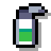 | Plant spray (2 uses) | A plant spray: 4 uses at full. Tap Treat beside a tray with blight or aphids (5 seconds, half that for the Botanist) to cure it before it spreads. Cargo sells a full one for 2 supply points. | — |
| Plant spray (3 uses) | A plant spray: 4 uses at full. Tap Treat beside a tray with blight or aphids (5 seconds, half that for the Botanist) to cure it before it spreads. Cargo sells a full one for 2 supply points. | — | |
| Plant spray | A plant spray: 4 uses at full. Tap Treat beside a tray with blight or aphids (5 seconds, half that for the Botanist) to cure it before it spreads. Cargo sells a full one for 2 supply points. | Botanics, request console order (2 points) | |
| Handcuffs | A pair of steel handcuffs; the Security Officer carries two. Hold them and tap Cuff beside someone (3 seconds): they must stay where they stand, or the cuffs slip off. A cuffed player cannot use their hands (nothing is picked up, dropped, worn or worked), walks one tick slower per step, and may still talk and be searched. A Security Officer or the Captain takes cuffs off in 2 seconds; anyone else needs 10 seconds and a free hand, and keeps the cuffs. They also come off when a cell sentence ends. | Security Officer's kit | |
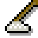 | Mop | The Janitor's mop. Hold it with a bucket that has water left in your other hand, stand within 2 tiles of a puddle and tap Mop floor (2 seconds, one dip of the bucket per puddle). It clears puddles only: there is no blood, and the floor decals of the map stay. | Janitor's Closet (2), Janitor's kit |
| Bucket (empty) | A mop bucket, holding up to 4 dips (the name says how many are left). Fill it at a sink (the restroom's, the Botanics' or any wash basin) with Fill bucket (4 seconds). Tap Spill the bucket to empty what is in it on the floor as one puddle: nothing else to do with it, apart from the mop. | Janitor's Closet (2), Janitor's kit | |
| Bucket (1 dip) | A mop bucket, holding up to 4 dips (the name says how many are left). Fill it at a sink (the restroom's, the Botanics' or any wash basin) with Fill bucket (4 seconds). Tap Spill the bucket to empty what is in it on the floor as one puddle: nothing else to do with it, apart from the mop. | — | |
| Bucket (2 dips) | A mop bucket, holding up to 4 dips (the name says how many are left). Fill it at a sink (the restroom's, the Botanics' or any wash basin) with Fill bucket (4 seconds). Tap Spill the bucket to empty what is in it on the floor as one puddle: nothing else to do with it, apart from the mop. | — | |
| Bucket (3 dips) | A mop bucket, holding up to 4 dips (the name says how many are left). Fill it at a sink (the restroom's, the Botanics' or any wash basin) with Fill bucket (4 seconds). Tap Spill the bucket to empty what is in it on the floor as one puddle: nothing else to do with it, apart from the mop. | — | |
| Bucket | A mop bucket, holding up to 4 dips (the name says how many are left). Fill it at a sink (the restroom's, the Botanics' or any wash basin) with Fill bucket (4 seconds). Tap Spill the bucket to empty what is in it on the floor as one puddle: nothing else to do with it, apart from the mop. | — | |
| Wet floor sign | A yellow wet floor sign, for stations with gravity (Benthos and Kestrel; Heron is weightless, nobody slips there and it has none). Tap Place wet floor sign on a free floor tile within reach: nobody slips on that tile for 2 minutes, then the sign lies there again to pick up. The Janitor carries two there. | Janitor's kit | |
| Box of lightbulbs (5) | A cardboard box of spare lightbulbs: a full one holds 6, and it is the same box with fewer in it as bulbs are used (the name says how many are left). Every room has a ceiling lamp whose bulb burns out now and then in a real shift (about one a room in 12 minutes, never more than 3 rooms dark at once): the part of the room more than 3 tiles from its lamp goes dark (a dark socket shows on the lamp). Hold the box beside the lamp and tap Replace bulb (3 seconds). The Janitor's closet has more boxes. | — | |
| Box of lightbulbs (4) | A cardboard box of spare lightbulbs: a full one holds 6, and it is the same box with fewer in it as bulbs are used (the name says how many are left). Every room has a ceiling lamp whose bulb burns out now and then in a real shift (about one a room in 12 minutes, never more than 3 rooms dark at once): the part of the room more than 3 tiles from its lamp goes dark (a dark socket shows on the lamp). Hold the box beside the lamp and tap Replace bulb (3 seconds). The Janitor's closet has more boxes. | — | |
| Box of lightbulbs (3) | A cardboard box of spare lightbulbs: a full one holds 6, and it is the same box with fewer in it as bulbs are used (the name says how many are left). Every room has a ceiling lamp whose bulb burns out now and then in a real shift (about one a room in 12 minutes, never more than 3 rooms dark at once): the part of the room more than 3 tiles from its lamp goes dark (a dark socket shows on the lamp). Hold the box beside the lamp and tap Replace bulb (3 seconds). The Janitor's closet has more boxes. | — | |
| Box of lightbulbs (2) | A cardboard box of spare lightbulbs: a full one holds 6, and it is the same box with fewer in it as bulbs are used (the name says how many are left). Every room has a ceiling lamp whose bulb burns out now and then in a real shift (about one a room in 12 minutes, never more than 3 rooms dark at once): the part of the room more than 3 tiles from its lamp goes dark (a dark socket shows on the lamp). Hold the box beside the lamp and tap Replace bulb (3 seconds). The Janitor's closet has more boxes. | — | |
| Box of lightbulbs (1) | A cardboard box of spare lightbulbs: a full one holds 6, and it is the same box with fewer in it as bulbs are used (the name says how many are left). Every room has a ceiling lamp whose bulb burns out now and then in a real shift (about one a room in 12 minutes, never more than 3 rooms dark at once): the part of the room more than 3 tiles from its lamp goes dark (a dark socket shows on the lamp). Hold the box beside the lamp and tap Replace bulb (3 seconds). The Janitor's closet has more boxes. | — | |
| Ore bag | A canvas bag for ore: it holds 6 chunks and is carried in a hand (too big for a backpack). Drilling with the bag in the other hand puts the ore straight into it, and Pick up from the rock does too. At the refinery, with the bag in the active hand, Load ore tips out as much as the hopper (12) takes. | Mining Dock, Miner's kit | |
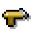 | Hand drill | The Miner's hand drill. Out on the asteroid (the roped walk of the EVA pod, the truss beyond the arrays) hold it in the active hand within 2 tiles of a rock tile that still has ore and tap Drill ore (4 seconds, a chunk at a time; a tile holds 2 chunks, then it is bare). Iron-rich tiles give iron ore, copper-rich ones copper ore, grey rock plain rock. | Mining Dock, Miner's kit |
| Pipe | A piece of pipe, turned at the lathe in the Machine Workshop (2 plates, 6 seconds). A Station Engineer holding it taps Lay pipe on a gap in the plant's pipes (where a pipe was cut or taken out: the tile shows a dark gap) and the piece is laid and secured. It never starts a new run: the plant is built, and is only repaired. A loose pipe can be pulled off its bracket (Pull pipe: the piece then follows you, one tile behind, like a crate, and a gap is left); pick it up or drag it to a gap and lay it there. | — | |
| Valve kit | The parts of a valve, turned at the lathe in the Machine Workshop (3 plates, 10 seconds). A Station Engineer holding it taps Fit the valve kit beside a broken valve (it wears a red cross) and the machine works again. | — | |
| Pump kit | The parts of a pump, turned at the lathe in the Machine Workshop (4 plates, 14 seconds). A Station Engineer holding it taps Fit the pump kit beside a broken pump (it wears a red cross) and the machine works again. | — | |
| Vent kit | The parts of a vent, turned at the lathe in the Machine Workshop (2 plates, 8 seconds). A Station Engineer holding it taps Fit the vent kit beside a broken vent (it wears a red cross) and the machine works again. | — | |
| Scrubber kit | The parts of a scrubber, turned at the lathe in the Machine Workshop (2 plates, 8 seconds). A Station Engineer holding it taps Fit the scrubber kit beside a broken scrubber (it wears a red cross) and the machine works again. | — | |
| Stunner | A hand stunner: hold it and tap Stun beside the nearest person in a straight line (a row, a column or a diagonal, with nothing between) up to 5 tiles away. The bolt locks their muscles for 5 seconds (no steps, no work) and does no damage. It needs 12 seconds to recharge before the next shot. It will not fire at someone who is cuffed or down. Use it to stop someone who is a danger to others, from a distance, and then cuff them: the Standard Operating Procedures say to use the least force that works. | Security Office, Security Officer's kit | |
| Baton | A short baton: hold it and tap Baton beside someone within one tile. A blow does 6 brute damage and stuns them for 2 seconds; there is a second between blows. It will not strike someone who is cuffed, down or dead (Station Law: a detained person is not struck). Striking a crew member is a Class 2 offence unless the officer is stopping a danger; keep it for the last step, after the stunner and the spray, and write it in the report. | Security Office, Security Officer's kit | |
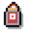 | Pepper spray | A can of pepper spray: hold it and tap Pepper-spray beside someone within 2 tiles. Their eyes close and burn and they cannot see for 8 seconds (the screen goes dark as with burned eyes, then clears by itself) unless they wear welding goggles or an EVA helmet. It needs 15 seconds before the next puff, and will not spray someone who is cuffed or down. Use it to make a crowd or a runner stop and listen, before any stronger force. | Security Office, Security Officer's kit |
| Plunger | The Janitor's plunger. Stand within reach of a clogged waste pipe (the map shows the clog hanging from the ceiling) with it in the active hand and tap Clear clog (3 seconds, the Janitor twice as fast). It is not used up. One lies in the Janitor's Closet. | Janitor's Closet | |
| Oxygen cylinder | A gas cylinder of oxygen from the supply console (10 points). Too big for a backpack. Beside the gas cylinder port in Atmospherics, with a wrench in the other hand, tap Wrench the cylinder onto the port: it empties 30000 moles into the plant's O2 store in 20 seconds, then the empty cylinder lies beside the port. | request console order (10 points), the supply console, for 10 points | |
| Nitrogen cylinder | A gas cylinder of nitrogen from the supply console (10 points). Too big for a backpack. Beside the gas cylinder port in Atmospherics, with a wrench in the other hand, tap Wrench the cylinder onto the port: it empties 30000 moles into the plant's N2 store in 20 seconds, then the empty cylinder lies beside the port. | request console order (10 points), the supply console, for 10 points | |
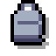 | Empty gas cylinder | A gas cylinder that has been emptied into the plant. Carry it to the delivery pad in the Cargo Bay and ship it with the pad: 2 supply points. Too big for a backpack. | a gas cylinder emptied into its store at the port |
| Servo set | Servo set: a part of the Robotics bench (built from hull plate and copper bar). In the other hand with a screwdriver in the active one, it is fitted into a robot's joints: the work takes half the time and the robot is set right. The Pressure gasket and the Haul drone are built from one. It goes in a backpack. | the Robotics bench, once the Servo sets project is released (its prototype is built from a reviewed finding) | |
| Sealing gasket | Sealing gasket: a part of the Robotics bench (built from hull plate and base reagent). A cut ring that holds pressure: the Pressure gasket, the Haul drone's rotor and the Shielded visor are built from one. It goes in a backpack. | the Robotics bench (a plate and a base reagent): a part, no research needed | |
| Pressure gasket | A pressure gasket (built from servo set and sealing gasket). In the active hand with a welder in the other, it patches a breach, a stripped wall or a cracked wall in half the time and without a hull plate (Patch breach); it is used up. It comes from a finished project: the first one is a prototype in its field trial, and a prototype may weep and fail. | the Robotics bench, once the Pressure gasket project is released | |
| Haul drone | A haul drone (built from servo set and hull plate). Beside the delivery pad with a crate on it, hold the drone and tap Send the crate with the drone: the crate lands by the request console 12 seconds later and the drone is used up. A prototype drone may fail and drop out of the air. | the Robotics bench, once the Haul drone project is released |
Medical
| Item | What it does | Where to get one | |
|---|---|---|---|
| First aid kit | Hold it and tap Treat beside someone within reach (or Treat yourself): 30 points off the worst of their damage (the kit is not used up), and the unconscious wake. Or tap Open first aid kit: it opens into a box at your feet holding 3 bandages, 2 burn ointments, 2 antitoxin pills and an epinephrine pen, which you take out one at a time from its list. Too big for a belt: carry it in hand or in your backpack. | Medbay (3), in a closet in the Medbay, in a closet in the Crew Quarters, in a cabinet in the Chemistry (2), in a cabinet in the Medbay (2), Medical Doctor's kit, request console order (5 points) | |
| Defibrillator | Brings back someone who died less than 3 minutes ago; they get up with 20 health and still need treatment. | Medbay, Medical Doctor's kit | |
| Cold medicine | Take it when you have a cold or the flu: hold it and tap Take medicine. You are well in 30 seconds instead of the full 4 minutes (cold) or 7 minutes (flu). Used up. The Medbay keeps some. It does nothing for someone who is not sick. | Medbay (3), in a cabinet in the Chemistry (5) | |
| Health analyzer | Hold it and tap Scan beside someone within reach (or Scan yourself): after 2 seconds of keeping still it lists, to you alone, their health, whether they are alive, unconscious or dead, any cold or flu and how far along it is, burned eyes and how hungry they are, and the four kinds of damage in numbers (brute, burn, toxin, oxygen). A cold or flu in its first stage, before any symptom, shows nothing here: only a stethoscope hears it. Nobody else is told. The Medical Doctor starts with one on the medical belt; spares are on a Medbay table and in the Medbay closet. | Medbay, in a closet in the Medbay, Medical Doctor's kit | |
| Bandage | A one-use treatment for brute damage. Hold it and tap Treat beside someone (or Treat yourself): after 3 seconds (a Medical Doctor takes half that) it takes 15 points off their brute damage; anyone else, without the first aid skill of the Heron logbook, takes off only 50 percent of that. The health analyzer lists the four kinds of damage. It fits the medical belt, a pocket and a backpack, and comes in the first aid kit, the Medbay cabinets and (made from reagents) at Chemistry. | Medbay (2), in a cabinet in the Chemistry (4), Miner's kit | |
| Burn ointment | A one-use treatment for burn damage. Hold it and tap Treat beside someone (or Treat yourself): after 3 seconds (a Medical Doctor takes half that) it takes 15 points off their burn damage; anyone else, without the first aid skill of the Heron logbook, takes off only 50 percent of that. The health analyzer lists the four kinds of damage. It fits the medical belt, a pocket and a backpack, and comes in the first aid kit, the Medbay cabinets and (made from reagents) at Chemistry. | Medbay, in a cabinet in the Chemistry (3) | |
| Antitoxin pill | A one-use treatment for toxin damage. Hold it and tap Treat beside someone (or Treat yourself): after 3 seconds (a Medical Doctor takes half that) it takes 15 points off their toxin damage; anyone else, without the first aid skill of the Heron logbook, takes off only 50 percent of that. The health analyzer lists the four kinds of damage. It fits the medical belt, a pocket and a backpack, and comes in the first aid kit, the Medbay cabinets and (made from reagents) at Chemistry. | in a cabinet in the Chemistry (3) | |
| Epinephrine pen | A one-use treatment for oxygen damage. Hold it and tap Treat beside someone (or Treat yourself): after 2 seconds (a Medical Doctor takes half that) it takes 20 points off their oxygen damage; anyone else, without the first aid skill of the Heron logbook, takes off only 50 percent of that. The health analyzer lists the four kinds of damage. It fits the medical belt, a pocket and a backpack, and comes in the first aid kit, the Medbay cabinets and (made from reagents) at Chemistry. It also wakes someone who is unconscious for 10 seconds, even when their health stays at 0: they fall again after it. | in a cabinet in the Chemistry, Miner's kit | |
| Morphine syringe | A restricted painkiller, kept in the locked cabinet between the Medbay and Chemistry (a medical card opens it) and made at the Chemistry dispenser from all three reagents. Hold it and tap Inject morphine: you are numb for 3 minutes, and hurt below 30 health (which otherwise slows your steps and your work) slows you no more. It heals nothing and does not hide how hurt you are from a scan. | in a cabinet in the Medbay (2) | |
| Surgery kit | A scalpel set. A Medical Doctor holding it, beside a patient who lies on the operating table of the Surgery, taps Operate and picks a procedure from the list: Treat eyes (cures the welding burn), Remove toxins (40 points off the toxin damage) or Repair wounds (40 points off the brute damage), 20 seconds each. A patient who gets up cancels it. No anaesthesia is needed. A surgeon without latex gloves and a sterile mask risks infecting the patient, and so does one with unwashed hands (wash at a sink first: 40 percent for a wound infection, which an antibiotic cures). It lies on the Surgery's instrument tray. | Surgery | |
| Base reagent | A base reagent for the Chemistry dispenser. Carry the reagents a recipe needs (hands, pockets, belt, backpack) and tap Chemistry beside the dispenser. The shift's stock lies on the racks of the Chemistry room; Cargo sells more for 2 supply points each. | Chemistry (4), request console order (2 points) | |
| Acid reagent | A acid reagent for the Chemistry dispenser. Carry the reagents a recipe needs (hands, pockets, belt, backpack) and tap Chemistry beside the dispenser. The shift's stock lies on the racks of the Chemistry room; Cargo sells more for 2 supply points each. | Chemistry (4), request console order (2 points) | |
| Salt reagent | A salt reagent for the Chemistry dispenser. Carry the reagents a recipe needs (hands, pockets, belt, backpack) and tap Chemistry beside the dispenser. The shift's stock lies on the racks of the Chemistry room; Cargo sells more for 2 supply points each. | Chemistry (4), request console order (2 points) | |
| Flu antiviral | Take it when you have a cold or the flu: hold it and tap Take the antiviral. You are well in 10 seconds instead of the full time (cold medicine takes 30 seconds). Used up. Made at the Chemistry dispenser from an acid and a salt reagent. It does nothing for someone who is not sick. | — | |
| Opened first aid kit | An opened first aid kit lying on the floor: tap Open the first aid kit beside it for its list, take what you need out one at a time, and put treatments back in (it takes nothing else). When the last thing is out it is thrown away. It cannot be picked up. | — | |
| Antibiotic pill | A pill that cures a wound infection (the sickness a patient gets from an operation with unwashed hands): hold it and tap Take the antibiotic, and the infection is gone in 5 seconds. It does nothing for a cold or the flu (those need cold medicine or the antiviral) and is not used up on someone who is well. A Medical Doctor keeps it on the medical belt; the Medbay's cabinet holds some and Chemistry presses more from an acid and a base reagent. | Medbay, in a cabinet in the Chemistry (2) | |
| Splint | A splint (built from hull plate and base reagent). Hold it and tap Treat beside someone hurt: it takes 25 brute damage off in 4 seconds (half for the Medical Doctor) and is used up (a layman heals only half). A prototype splint may buckle. | the Robotics bench, once the Splint lattice project is released | |
| Culture swab | A culture swab (built from salt reagent and base reagent). A surgeon who carries one uses it on the next operation: the patient's risk of an infection is halved. A prototype swab may be spoiled. | the Robotics bench, once the Culture swab project is released |
Food, drink and plants
| Item | What it does | Where to get one | |
|---|---|---|---|
| Wheat seeds | Plant it in a planting tray in the greenhouse: hold it, stand beside an empty tray and tap Plant (2 seconds). The wheat is grain for bread: it ripens after 150 seconds of care, drinks about 20 water and eats 12 nutrients a minute, and a good harvest gives 2 produce and the seed back, so the greenhouse never runs out. The Botanist's seed pouch holds one. Small enough for a pocket. Cargo sells a seed for 2 supply points. | Botanics (2), Botanist's kit, request console order (2 points) | |
| Tomato seeds | Plant it in a planting tray in the greenhouse: hold it, stand beside an empty tray and tap Plant (2 seconds). The tomato is red and juicy: it ripens after 3 minutes of care, drinks about 24 water and eats 16 nutrients a minute, and a good harvest gives 2 produce and the seed back, so the greenhouse never runs out. The Botanist's seed pouch holds one. Small enough for a pocket. Cargo sells a seed for 2 supply points. | Botanics (2), Botanist's kit, request console order (2 points) | |
| Bean seeds | Plant it in a planting tray in the greenhouse: hold it, stand beside an empty tray and tap Plant (2 seconds). The bean is fixes its own nutrients: it ripens after 210 seconds of care, drinks about 14 water and eats 6 nutrients a minute, and a good harvest gives 2 produce and the seed back, so the greenhouse never runs out. The Botanist's seed pouch holds one. Small enough for a pocket. Cargo sells a seed for 2 supply points. | Botanics (2), Botanist's kit, request console order (2 points) | |
| Wheat | Produce from the greenhouse: put it in the pass-through cabinet for the Chef, or onto a stove to cook it. Goes into flatbread (2 wheat) and malt tea (wheat). | in a cabinet in the Kitchen (2) | |
| Tomatoes | Produce from the greenhouse: put it in the pass-through cabinet for the Chef, or onto a stove to cook it. Goes into tomato pilaf (rice and tomatoes), bean stew (beans and tomatoes), tomato soup (2 tomatoes) and tomato fizz (tomatoes). | in a cabinet in the Kitchen | |
| Beans | Produce from the greenhouse: put it in the pass-through cabinet for the Chef, or onto a stove to cook it. Goes into protein skillet (protein block and beans), rice bowl (rice and beans) and bean stew (beans and tomatoes). | in a cabinet in the Kitchen | |
| Protein block | Ordered from Cargo at the supply console (4 supply points). Cooked with beans on a stove it makes a protein skillet; with a potato and an onion, the harvest hash, the biggest meal of the kitchen. | in a cabinet in the Kitchen, request console order (4 points) | |
| Young wheat | A young plant growing in a tray. It ripens in a while if it has water; nobody picks it up. | — | |
| Young tomato plant | A young plant growing in a tray. It ripens in a while if it has water; nobody picks it up. | — | |
| Young bean plant | A young plant growing in a tray. It ripens in a while if it has water; nobody picks it up. | — | |
| Ripe wheat | A ripe plant in a tray: stand beside it and tap Harvest (3 seconds) for 2 produce (half of that when it was neglected) and the seed back. | — | |
| Ripe tomato plant | A ripe plant in a tray: stand beside it and tap Harvest (3 seconds) for 2 produce (half of that when it was neglected) and the seed back. | — | |
| Ripe bean plant | A ripe plant in a tray: stand beside it and tap Harvest (3 seconds) for 2 produce (half of that when it was neglected) and the seed back. | — | |
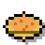 | Flatbread | A dish from the kitchen. Hold it and tap Eat (3 seconds): it fills 30 percent of the hunger meter. It does not spoil. Made from 2 wheat at the stove. | — |
| Tomato soup | A dish from the kitchen. Hold it and tap Eat (3 seconds): it fills 33 percent of the hunger meter. It does not spoil. Made from 2 tomatoes at the stove. | — | |
| Bean stew | A dish from the kitchen. Hold it and tap Eat (3 seconds): it fills 42 percent of the hunger meter. It does not spoil. Made from beans and tomatoes at the stove. | — | |
| Protein skillet | A dish from the kitchen. Hold it and tap Eat (3 seconds): it fills 60 percent of the hunger meter. It does not spoil. Made from protein block and beans at the stove. | — | |
| Ration pack | A ration pack from the dispenser (one each 90 seconds for everybody). Hold it and tap Eat (3 seconds): it fills 35 percent of the hunger meter, less than a cooked meal. Small enough for a pocket. | — | |
| Tomato fizz | A drink from the bar. Hold it and tap Eat (3 seconds): it fills 6 percent of the hunger meter. It does not spoil. Made from tomatoes at the bar mixer. | — | |
| Malt tea | A drink from the bar. Hold it and tap Eat (3 seconds): it fills 5 percent of the hunger meter. It does not spoil. Made from wheat at the bar mixer. | — | |
| Orchard juice | A bottle on the bar's racks, an ingredient of the cocktails: goes into Solar Spritz (orchard juice and amber ferment) and Airlock Sour (orchard juice and bitters). Nothing in it is intoxicating (the ferment is a fizzy fermented tea). It is not used up when a cocktail is shaken, and it needs to stand within reach of the bar counter to count. | Bar (2) | |
| Sweet syrup | A bottle on the bar's racks, an ingredient of the cocktails: goes into Nebula Fizz (amber ferment and sweet syrup). Nothing in it is intoxicating (the ferment is a fizzy fermented tea). It is not used up when a cocktail is shaken, and it needs to stand within reach of the bar counter to count. | Bar (2) | |
| Amber ferment | A bottle on the bar's racks, an ingredient of the cocktails: goes into Solar Spritz (orchard juice and amber ferment), Nebula Fizz (amber ferment and sweet syrup) and Dry Dock (amber ferment and bitters). Nothing in it is intoxicating (the ferment is a fizzy fermented tea). It is not used up when a cocktail is shaken, and it needs to stand within reach of the bar counter to count. | Bar | |
| Bitters | A bottle on the bar's racks, an ingredient of the cocktails: goes into Airlock Sour (orchard juice and bitters) and Dry Dock (amber ferment and bitters). Nothing in it is intoxicating (the ferment is a fizzy fermented tea). It is not used up when a cocktail is shaken, and it needs to stand within reach of the bar counter to count. | Bar | |
| Solar Spritz | A cocktail glass, shaken at the bar from orchard juice and amber ferment. Hold it and tap Drink (3 seconds): it fills 7 percent of the hunger meter, a snack, and nothing else; there is no drunkenness. It lands on the bar counter. | — | |
| Nebula Fizz | A cocktail glass, shaken at the bar from amber ferment and sweet syrup. Hold it and tap Drink (3 seconds): it fills 7 percent of the hunger meter, a snack, and nothing else; there is no drunkenness. It lands on the bar counter. | — | |
| Airlock Sour | A cocktail glass, shaken at the bar from orchard juice and bitters. Hold it and tap Drink (3 seconds): it fills 6 percent of the hunger meter, a snack, and nothing else; there is no drunkenness. It lands on the bar counter. | — | |
| Dry Dock | A cocktail glass, shaken at the bar from amber ferment and bitters. Hold it and tap Drink (3 seconds): it fills 6 percent of the hunger meter, a snack, and nothing else; there is no drunkenness. It lands on the bar counter. | — | |
| Potato seeds | Plant it in a planting tray in the greenhouse: hold it, stand beside an empty tray and tap Plant (2 seconds). The potato is the staple of the station: it ripens after 3 minutes of care, drinks about 16 water and eats 16 nutrients a minute, and a good harvest gives 3 produce and the seed back, so the greenhouse never runs out. The Botanist's seed pouch holds one. Small enough for a pocket. Cargo sells a seed for 2 supply points. | Botanics (2), Botanist's kit, request console order (2 points) | |
| Rice seeds | Plant it in a planting tray in the greenhouse: hold it, stand beside an empty tray and tap Plant (2 seconds). The rice is thirsty, grows wet: it ripens after 4 minutes of care, drinks about 30 water and eats 14 nutrients a minute, and a good harvest gives 2 produce and the seed back, so the greenhouse never runs out. The Botanist's seed pouch holds one. Small enough for a pocket. Cargo sells a seed for 2 supply points. | Botanics (2), Botanist's kit, request console order (2 points) | |
| Corn seeds | Plant it in a planting tray in the greenhouse: hold it, stand beside an empty tray and tap Plant (2 seconds). The corn is hungry for nutrients: it ripens after 270 seconds of care, drinks about 20 water and eats 22 nutrients a minute, and a good harvest gives 2 produce and the seed back, so the greenhouse never runs out. The Botanist's seed pouch holds one. Small enough for a pocket. Cargo sells a seed for 2 supply points. | Botanics (2), Botanist's kit, request console order (2 points) | |
| Carrot seeds | Plant it in a planting tray in the greenhouse: hold it, stand beside an empty tray and tap Plant (2 seconds). The carrot is quick and generous: it ripens after 150 seconds of care, drinks about 14 water and eats 10 nutrients a minute, and a good harvest gives 3 produce and the seed back, so the greenhouse never runs out. The Botanist's seed pouch holds one. Small enough for a pocket. Cargo sells a seed for 2 supply points. | Botanics (2), Botanist's kit, request console order (2 points) | |
| Onion seeds | Plant it in a planting tray in the greenhouse: hold it, stand beside an empty tray and tap Plant (2 seconds). The onion is flavours broths and stews: it ripens after 3 minutes of care, drinks about 12 water and eats 10 nutrients a minute, and a good harvest gives 2 produce and the seed back, so the greenhouse never runs out. The Botanist's seed pouch holds one. Small enough for a pocket. Cargo sells a seed for 2 supply points. | Botanics (2), Botanist's kit, request console order (2 points) | |
| Apple seeds | Plant it in a planting tray in the greenhouse: hold it, stand beside an empty tray and tap Plant (2 seconds). The apple is a tree-like crop, slow but generous: it ripens after 6 minutes of care, drinks about 10 water and eats 14 nutrients a minute, and a good harvest gives 3 produce and the seed back, so the greenhouse never runs out. Seeds lie on the greenhouse racks. Small enough for a pocket. Cargo sells a seed for 2 supply points. | Botanics (2), request console order (2 points) | |
| Mushroom spores | Plant it in a planting tray in the greenhouse: hold it, stand beside an empty tray and tap Plant (2 seconds). The mushroom is fast and small: it ripens after 2 minutes of care, drinks about 12 water and eats 8 nutrients a minute, and a good harvest gives 1 produce and the seed back, so the greenhouse never runs out. Seeds lie on the greenhouse racks. Small enough for a pocket. Cargo sells a seed for 2 supply points. | Botanics (2), request console order (2 points) | |
| Beet seeds | Plant it in a planting tray in the greenhouse: hold it, stand beside an empty tray and tap Plant (2 seconds). The sugar beet is sugar for the kitchen and the bar: it ripens after 4 minutes of care, drinks about 14 water and eats 12 nutrients a minute, and a good harvest gives 2 produce and the seed back, so the greenhouse never runs out. Seeds lie on the greenhouse racks. Small enough for a pocket. Cargo sells a seed for 2 supply points. | Botanics (2), request console order (2 points) | |
| Potatoes | Produce from the greenhouse: put it in the pass-through cabinet for the Chef, or onto a stove to cook it. Goes into harvest hash (protein block and potatoes and onions), vegetable stew (carrots and potatoes and onions), corn chowder (corn cobs and potatoes and onions), potato soup (potatoes and onions), fried potato strips (2 potatoes) and baked potato (potatoes). | in a cabinet in the Kitchen | |
| Rice | Produce from the greenhouse: put it in the pass-through cabinet for the Chef, or onto a stove to cook it. Goes into tomato pilaf (rice and tomatoes) and rice bowl (rice and beans). | — | |
| Corn cobs | Produce from the greenhouse: put it in the pass-through cabinet for the Chef, or onto a stove to cook it. Goes into corn chowder (corn cobs and potatoes and onions). | — | |
| Carrots | Produce from the greenhouse: put it in the pass-through cabinet for the Chef, or onto a stove to cook it. Goes into vegetable stew (carrots and potatoes and onions) and carrot salad (2 carrots). | — | |
| Onions | Produce from the greenhouse: put it in the pass-through cabinet for the Chef, or onto a stove to cook it. Goes into harvest hash (protein block and potatoes and onions), vegetable stew (carrots and potatoes and onions), corn chowder (corn cobs and potatoes and onions), mushroom pan (mushrooms and onions), potato soup (potatoes and onions) and onion broth (2 onions). | in a cabinet in the Kitchen | |
| Apples | Produce from the greenhouse: put it in the pass-through cabinet for the Chef, or onto a stove to cook it. Goes into fruit compote (apples and beet sugar). | — | |
| Mushrooms | Produce from the greenhouse: put it in the pass-through cabinet for the Chef, or onto a stove to cook it. Goes into mushroom pan (mushrooms and onions). | — | |
| Sugar beets | Produce from the greenhouse: put it in the pass-through cabinet for the Chef, or onto a stove to cook it. Goes into beet sugar (sugar beets). The mixer turns it into sugar. | — | |
| Young potato plant | A young plant growing in a tray. It ripens in a while if it has water; nobody picks it up. | — | |
| Young rice | A young plant growing in a tray. It ripens in a while if it has water; nobody picks it up. | — | |
| Young corn | A young plant growing in a tray. It ripens in a while if it has water; nobody picks it up. | — | |
| Young carrot | A young plant growing in a tray. It ripens in a while if it has water; nobody picks it up. | — | |
| Young onion | A young plant growing in a tray. It ripens in a while if it has water; nobody picks it up. | — | |
| Young apple tree | A young plant growing in a tray. It ripens in a while if it has water; nobody picks it up. | — | |
| Young mushrooms | A young plant growing in a tray. It ripens in a while if it has water; nobody picks it up. | — | |
| Young beet | A young plant growing in a tray. It ripens in a while if it has water; nobody picks it up. | — | |
| Ripe potato plant | A ripe plant in a tray: stand beside it and tap Harvest (3 seconds) for 3 produce (half of that when it was neglected) and the seed back. | — | |
| Ripe rice | A ripe plant in a tray: stand beside it and tap Harvest (3 seconds) for 2 produce (half of that when it was neglected) and the seed back. | — | |
| Ripe corn | A ripe plant in a tray: stand beside it and tap Harvest (3 seconds) for 2 produce (half of that when it was neglected) and the seed back. | — | |
| Ripe carrots | A ripe plant in a tray: stand beside it and tap Harvest (3 seconds) for 3 produce (half of that when it was neglected) and the seed back. | — | |
| Ripe onions | A ripe plant in a tray: stand beside it and tap Harvest (3 seconds) for 2 produce (half of that when it was neglected) and the seed back. | — | |
| Ripe apple tree | A ripe plant in a tray: stand beside it and tap Harvest (3 seconds) for 3 produce (half of that when it was neglected) and the seed back. | — | |
| Ripe mushrooms | A ripe plant in a tray: stand beside it and tap Harvest (3 seconds) for 1 produce (half of that when it was neglected) and the seed back. | — | |
| Ripe beets | A ripe plant in a tray: stand beside it and tap Harvest (3 seconds) for 2 produce (half of that when it was neglected) and the seed back. | — | |
| Beet sugar | Sugar from the sugar beet, made at the bar's mixer (3 seconds). It is an ingredient: the fruit compote needs it, and the bar may sweeten with it. | — | |
| Weeds | Weeds pulled from a tray (hold them and tap Compost weeds at the compost bin: every 6 of them make a fertilizer use). Nobody eats them. | — | |
| Fried potato strips | A dish from the kitchen. Hold it and tap Eat (3 seconds): it fills 38 percent of the hunger meter. It does not spoil. Made from 2 potatoes at the stove. | — | |
| Baked potato | A dish from the kitchen. Hold it and tap Eat (3 seconds): it fills 28 percent of the hunger meter. It does not spoil. Made from potatoes at the stove. | — | |
| Potato soup | A dish from the kitchen. Hold it and tap Eat (3 seconds): it fills 40 percent of the hunger meter. It does not spoil. Made from potatoes and onions at the stove. | — | |
| Rice bowl | A dish from the kitchen. Hold it and tap Eat (3 seconds): it fills 45 percent of the hunger meter. It does not spoil. Made from rice and beans at the stove. | — | |
| Corn chowder | A dish from the kitchen. Hold it and tap Eat (3 seconds): it fills 56 percent of the hunger meter. It does not spoil. Made from corn cobs and potatoes and onions at the stove. | — | |
| Vegetable stew | A dish from the kitchen. Hold it and tap Eat (3 seconds): it fills 52 percent of the hunger meter. It does not spoil. Made from carrots and potatoes and onions at the stove. | — | |
| Carrot salad | A dish from the kitchen. Hold it and tap Eat (3 seconds): it fills 25 percent of the hunger meter. It does not spoil. Made from 2 carrots at the stove. | — | |
| Onion broth | A dish from the kitchen. Hold it and tap Eat (3 seconds): it fills 26 percent of the hunger meter. It does not spoil. Made from 2 onions at the stove. | — | |
| Fruit compote | A dish from the kitchen. Hold it and tap Eat (3 seconds): it fills 34 percent of the hunger meter. It does not spoil. Made from apples and beet sugar at the stove. | — | |
| Mushroom pan | A dish from the kitchen. Hold it and tap Eat (3 seconds): it fills 38 percent of the hunger meter. It does not spoil. Made from mushrooms and onions at the stove. | — | |
| Tomato pilaf | A dish from the kitchen. Hold it and tap Eat (3 seconds): it fills 47 percent of the hunger meter. It does not spoil. Made from rice and tomatoes at the stove. | — | |
| Harvest hash | A dish from the kitchen. Hold it and tap Eat (3 seconds): it fills 65 percent of the hunger meter. It does not spoil. Made from protein block and potatoes and onions at the stove. | — |
Power and solar
| Item | What it does | Where to get one | |
|---|---|---|---|
| Battery cell | A spare cell for the battery bank, made at the lathe (3 plates, 20 seconds). Too big for a pocket or the bag: carried in the hands. At a cell rack in the Battery Room, a cell that has failed or run hot is cut out of the bank first, then swapped for this one (8 seconds each); the old cell goes back as a scrap plate. One spare lies on the Electrical Workshop rack. | Battery Room (2), Electrical Workshop | |
| Inverter module | A spare inverter module, made at the lathe (2 plates, 15 seconds). Carried in the hands. An inverter module whose fan or capacitors have worn out runs hot, gives less and then shuts itself down: tap its cabinet in the Inverter Room and swap it for this one (8 seconds); the old module goes back as a scrap plate. One spare lies on the Electrical Workshop rack. | Inverter Room (2), Electrical Workshop | |
| Copper wire | A spool of copper wire, made at the lathe (1 plate, 8 seconds). The winding bench uses one up to rewind a transformer core (hold it and tap Rewind at the bench). One spare lies on the Electrical Workshop rack. | Electrical Workshop | |
| Solar panel | A spare solar panel, made at the lathe (4 plates, 24 seconds). Carried in the hands. On the truss beside a cracked panel, hold it and tap Replace panel (20 seconds): the old panel is cut loose and the new one is clean and whole. It cannot go in the backpack. | — | |
| Bolts | A handful of bolts, made at the lathe (1 plate, 5 seconds). An array's frame whose bolts have worked loose is tightened with a wrench (8 seconds); if bolts are missing altogether, hold new bolts in the other hand: they are used up. | Machine Workshop | |
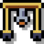 | Gantry crane | The transformer room's gantry crane on its wheels. It cannot be picked up: tap it and Pull it, and it follows your steps one tile behind you (Release lets go; walking more than two tiles away does too, and so does a wall, a closed door or furniture in the way). Beside the transformer it lifts the worn core out (10 seconds), beside the winding bench in the Electrical Workshop it sets the core down (5 seconds); then, once the core is rewound, back again. | — |
| Lockout tag | A lockout tag, from the rack in the Transformer Room (one for each of the four breakers). Open a breaker, hold the tag and tap Hang the lockout tag on its panel: nobody can close that breaker until the tag comes off, and its panel says who locked it out (anyone may take the tag off again; it comes back to a free hand). It fits a pocket. | High-Voltage Kiosk (4) | |
| Earthing rod | The earthing rod, from the rack inside the high-voltage kiosk. When every breaker is open and tagged and the transformer has been tested dead with a multitool's meter, hold the rod and tap Attach the earthing rod at the transformer: it is dead and earthed, and no breaker can be closed until the rod is taken off. Only then will the crane lift or lower the core. | High-Voltage Kiosk | |
| Iron ore | A chunk of iron ore cut from the asteroid off the truss (Drill, 4 seconds, with the hand drill). It lies where it fell, or goes straight into an ore bag held in a hand. Load ore tips it into the refinery's hopper in the Mining Dock; Smelt (6 seconds) makes a hull plate of it. | — | |
| Copper ore | A chunk of copper ore cut from the asteroid off the truss (Drill, 4 seconds, with the hand drill). It lies where it fell, or goes straight into an ore bag held in a hand. Load ore tips it into the refinery's hopper in the Mining Dock; Smelt (6 seconds) makes a copper bar of it. | — | |
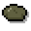 | Plain rock | A chunk of plain rock cut from the asteroid off the truss (Drill, 4 seconds, with the hand drill). It lies where it fell, or goes straight into an ore bag held in a hand. Load ore tips it into the refinery's hopper in the Mining Dock; Smelt (6 seconds) makes nothing: plain rock is waste (the slag is thrown away) of it. | — |
| Copper bar | A bar of copper from the refinery. Put it on the lathe in the Machine Workshop: copper wire is turned from one bar (or, as before, one plate), 8 seconds. | request console order (4 points) | |
| Rotor bearing | A spare bearing for a seabed turbine rotor, turned at the lathe (2 plates, 15 seconds). A rotor whose bearing has worn gives less and less and at last seizes: from the walkway beside it (the dive suit, the tank and the safety rope), hold the bearing and tap New bearing in rotor (20 seconds). It is used up. | — | |
| Rotor seal | A spare seal for a turbine rotor's nacelle, turned at the lathe (1 plate, 10 seconds). A weeping seal wets the field's converter in Turbine Control until it trips on a ground fault; the weeping rotor looks flooded and bubbles from the walkway. Hold the seal beside the rotor and tap New seal in rotor (20 seconds): the nacelle is pumped dry and the seal is used up. Then reset the converter with a multitool. | — | |
| Rotor brush | A stiff brush for the seabed turbines, turned at the lathe (1 plate, 5 seconds). Marine growth settles on every rotor all shift and costs it output. Hold the brush on the walkway beside a rotor and tap Scrape rotor (10 seconds). It is not used up. Two lie on a Workshop rack. | — | |
| Dead battery cell | A dead battery cell: the part a repair took out. Put it in the scrap press in the Construction Workshop (hold it, tap Press, 6 seconds) and half the plates it was made of come back: 1. Too big for a backpack. | swapping out a battery cell that died | |
| Failed inverter module | A failed inverter module: the part a repair took out. Put it in the scrap press in the Construction Workshop (hold it, tap Press, 6 seconds) and half the plates it was made of come back: 1. Too big for a backpack. | swapping out a failed inverter module | |
| Cracked solar panel | A cracked solar panel: the part a repair took out. Put it in the scrap press in the Construction Workshop (hold it, tap Press, 6 seconds) and half the plates it was made of come back: 2. Too big for a backpack. | replacing a solar panel on the truss: the old one comes down in the hand | |
| Sensor board | Sensor board: a part of the Robotics bench (built from copper bar and salt reagent and hull plate). Beside a power monitor with it in the active hand, tap Fit the sensor board: the monitor then lists the plant's wearing parts and the seconds before their own warning light would show. Once a shift. It goes in a backpack. | the Robotics bench, once the Sensor board project is released |
Paperwork and books
| Item | What it does | Where to get one | |
|---|---|---|---|
| Cargo stamp | The Cargo stamp. Hold an order form with the stamp in your other hand or your backpack and Stamp it (1 second). It stamps a filled paper too (the record then says Cargo), like every department's own stamp. | Cargo Reception, Logistics's kit | |
| Order form | The supply console (the order console, where a map has two) prints one for every approved order. Stamp it with the cargo stamp, then file it in the filing cabinet for 2 supply points. | printed by the supply console (the order console, where a map has two) for every approved order | |
| Stamped form | An order form with the cargo stamp on it. File it in the filing cabinet for 2 supply points. | stamping an order form | |
| ID card | Your name, your job and the access your job gives. A powered door into a room that asks for access opens only for a card that has it, worn in the ID slot or held in the hand in use. To put it on, hold it in either hand and tap ID in Gear. It does not go in a belt or backpack, and the dead drop theirs. | everyone starts wearing one made for them | |
| Heron logbook | A book of the Library ("Log of the Heron"), on a Library bookshelf. Hold it and tap Read: a progress bar for 1 minute, and then you have learned basic first aid for the rest of the shift (a note says so; it goes if you die). Once a shift for each book. The book stays: put it back on a shelf with Put on shelf, or leave it for the next reader. | Library, Maint. Tunnels by Power Tube, Maint. Tunnels by Restroom, in a closet in the Maint. Tunnels by Hub, in a closet in the Maint. Tunnels by Chemistry | |
| Seed and Soil | A book of the Library ("Seed and Soil"), on a Library bookshelf. Hold it and tap Read: a progress bar for 1 minute, and then you have learned basic wiring for the rest of the shift (a note says so; it goes if you die). Once a shift for each book. The book stays: put it back on a shelf with Put on shelf, or leave it for the next reader. | Library, Maint. Tunnels by Atmospherics, in a closet in the Maint. Tunnels by Hub, in a closet in the Maint. Tunnels by Restroom | |
| The Quiet Orbit | A book of the Library ("The Quiet Orbit"), on a Library bookshelf. Hold it and tap Read: a progress bar for 1 minute, and then you have learned basic cooking for the rest of the shift (a note says so; it goes if you die). Once a shift for each book. The book stays: put it back on a shelf with Put on shelf, or leave it for the next reader. | Library, Maint. Tunnels by Chemistry, in a closet in the Maint. Tunnels by Bridge, in a closet in the Maint. Tunnels by East Tube, in a closet in the Maint. Tunnels by Janitor | |
| Station Law | The law of the station, in three classes of offence with their sentences (warnings, cell times of 1 to 15 minutes, duty restrictions and removal from the shift), the rights of the detained and how to petition a Lawyer. Hold it and tap Read: its text opens in a list you scroll with a finger or the wheel, a paragraph a row. Copies stand on the Law Office's shelf, in the Security Office and on the Bridge. It teaches no skill and can be read again and again; the same text is on the website's Station Law page. | Law Office, Security Office, Bridge, Head of Personnel's kit, Lawyer's kit | |
| Standard Operating Procedures | How Security works: its duties, the three alert levels (green, blue, red) and what changes with each, searching and detaining, the use of the brig's cells (Lock 1 to 15 minutes, the belongings locker) and how to report. Hold it and tap Read: its text opens in a scrolling list. Copies stand on the Law Office's shelf, in the Security Office and on the Bridge. It teaches no skill; the same text is on the website's SOP page. | Law Office, Security Office, Bridge, Captain's kit, Lawyer's kit | |
| Paper | A blank sheet of office paper, taken from the paper bin on the desk of the Captain, the Head of Personnel, the Law Office, the Security Office, the cargo reception or the Medbay (Take paper). Beside an office desk (a table or counter in a room with a fax machine) tap Paper and Fill in: a type (Petition, Request or Report) and a topic from a short list, with a pen in a hand or a pocket. Only the Lawyer writes a Petition. Pick a topic from the list for the type, then who it is about from the crew list; the paper shows both. | the paper bin on an office desk (Take paper) | |
| Filled paper | A paper with its type, topic and the sender's name on it. Whoever holds it can Read it (nobody else sees the words); a stamp in your other hand, pocket or backpack marks it Approved or Denied by the stamp's owner, once. Fax it to another office from a fax machine, or keep it in a file cabinet. It changes nothing by itself: the Security Officer decides about a cell. | filling in a blank paper at an office desk, or a fax from another office | |
| Pen | A fountain pen. Filling in a paper needs one in a hand or a pocket (it fits a pocket). The Captain, the Head of Personnel, the Security Officer, the Lawyer and Logistics start with one in a pocket; spares lie on the desks of the Captain's Office, the HoP Office, the Law Office, the Security Office and the cargo desk. Held in the hand in use it shows on your sprite, in the skin you picked in the menu's Locker (fifteen colours and textures, all free for now): everyone sees that skin on the pen you hold. A skin changes the look of the pen and nothing else. | Captain's Office, Head of Personnel's Office, Security Office, Law Office, Cargo Reception, Logistics's kit, Captain's kit, Head of Personnel's kit, Security Officer's kit, Lawyer's kit, Roboticist's kit, Scientist's kit | |
| Captain stamp | The captain stamp: it lies on that office's desk. Hold it (a hand, pocket or backpack) and tap Paper with a filled paper in the other hand: Stamp it Approved or Denied, once. The paper says "by Captain": anybody may use any stamp, but the record names the stamp's owner. With the stamp in a hand, a file cabinet's list stamps the lowest-numbered unstamped filed paper (Stamp: approved, Stamp: denied). It fits a pocket; it stamps no order form (that is the Cargo stamp's work). | Captain's Office | |
| HoP stamp | The hop stamp: it lies on that office's desk. Hold it (a hand, pocket or backpack) and tap Paper with a filled paper in the other hand: Stamp it Approved or Denied, once. The paper says "by HoP": anybody may use any stamp, but the record names the stamp's owner. With the stamp in a hand, a file cabinet's list stamps the lowest-numbered unstamped filed paper (Stamp: approved, Stamp: denied). It fits a pocket; it stamps no order form (that is the Cargo stamp's work). | Head of Personnel's Office | |
| Security stamp | The security stamp: it lies on that office's desk. Hold it (a hand, pocket or backpack) and tap Paper with a filled paper in the other hand: Stamp it Approved or Denied, once. The paper says "by Security": anybody may use any stamp, but the record names the stamp's owner. With the stamp in a hand, a file cabinet's list stamps the lowest-numbered unstamped filed paper (Stamp: approved, Stamp: denied). It fits a pocket; it stamps no order form (that is the Cargo stamp's work). | Security Office | |
| Law stamp | The law stamp: it lies on that office's desk. Hold it (a hand, pocket or backpack) and tap Paper with a filled paper in the other hand: Stamp it Approved or Denied, once. The paper says "by Law": anybody may use any stamp, but the record names the stamp's owner. With the stamp in a hand, a file cabinet's list stamps the lowest-numbered unstamped filed paper (Stamp: approved, Stamp: denied). It fits a pocket; it stamps no order form (that is the Cargo stamp's work). | Law Office | |
| Medical stamp | The medical stamp: it lies on that office's desk. Hold it (a hand, pocket or backpack) and tap Paper with a filled paper in the other hand: Stamp it Approved or Denied, once. The paper says "by Medical": anybody may use any stamp, but the record names the stamp's owner. With the stamp in a hand, a file cabinet's list stamps the lowest-numbered unstamped filed paper (Stamp: approved, Stamp: denied). It fits a pocket; it stamps no order form (that is the Cargo stamp's work). | Medbay | |
| Paper ream | A ream of blank paper, ordered at the supply console for 2 points. Beside a paper bin tap Paper bin and Add the paper ream: the bin takes 20 more sheets (it holds 60 at most). Too big for a backpack. | request console order (2 points), the supply console, for 2 points | |
| Science stamp | The science stamp: it lies on that office's desk. Hold it (a hand, pocket or backpack) and tap Paper with a filled paper in the other hand: Stamp it Approved or Denied, once. The paper says "by Science": anybody may use any stamp, but the record names the stamp's owner. With the stamp in a hand, a file cabinet's list stamps the lowest-numbered unstamped filed paper (Stamp: approved, Stamp: denied). It fits a pocket; it stamps no order form (that is the Cargo stamp's work). | Research and Development |
Clothing and gear
| Item | What it does | Where to get one | |
|---|---|---|---|
| Air tank | Keeps you breathing where the air is thin (below 50 kPa), but only in the storage of a worn EVA suit: wear the suit, hold the tank and tap Suit storage in Gear. In a hand, pocket or backpack it gives nothing. It empties as you breathe thin air (about 5 minutes from full; the suit panel shows the time left) and an empty tank stays an empty tank: the air is the tank's own (full, three quarters, a half, a quarter, empty), so a fresh one is always full. Refill it (6 seconds) at the filling point in an EVA airlock or at the atmospherics tank filling station: a worn tank, or one held in the hand. Vacuum still crushes you unless you wear the EVA suit and helmet. | EVA Airlock (2), Main Airlock and Docking Port (2), Mining Dock (2), Atmospherics (6), in a closet in the Crew Quarters, in a closet in the Construction Workshop (2), in a closet in the Atmospherics (2), Station Engineer's kit, Medical Doctor's kit, Miner's kit, request console order (5 points) | |
| Toolbelt | Worn around the waist, it has 8 slots, each for wire cutters, a crowbar, a welder, a cable coil, a screwdriver, a multitool, a t-ray scanner or a wrench. Tap a slot above your hands to swap it with the hand in use. To put it on, hold it in either hand and tap Belt in Gear; tap Belt again to take it off into a free hand. | Machine Workshop, Station Engineer's kit, Scientist's kit | |
| Medical belt | Worn around the waist, it has 6 slots, each for a defibrillator, a health analyzer, a bandage, a burn ointment, an antitoxin pill, an epinephrine pen or an antibiotic pill. Tap a slot above your hands to swap it with the hand in use. To put it on, hold it in either hand and tap Belt in Gear; tap Belt again to take it off into a free hand. | Medbay, Medical Doctor's kit | |
| Backpack | Worn on your back, it holds 6 things of any kind but belts, backpacks, suits and crates. The Bag button beside your hands lists them: putting in is quick, taking out takes 1 second. To put it on, hold it in either hand and tap Back in Gear; tap Back again to take it off into a free hand. | in a closet in the Crew Quarters, Crew Member's kit, Station Engineer's kit, Medical Doctor's kit, Logistics's kit, Botanist's kit, Chef's kit, Bartender's kit, Captain's kit, Head of Personnel's kit, Security Officer's kit, Lawyer's kit, Janitor's kit, Miner's kit, Roboticist's kit, Scientist's kit | |
| EVA suit | Worn on the body, from a hand: hold it and tap Suit in Gear. With the EVA helmet it stops the crush of vacuum. A worn suit has storage for an air tank (tap Suit storage in Gear): only a tank there gives air. It goes in neither a belt nor a backpack. | Mining Dock, in a closet in the EVA Airlock (2), in a closet in the Construction Workshop (2) | |
| EVA helmet | Worn on the head, from a hand: hold it and tap Head in Gear. With the EVA suit it stops the crush of vacuum; you still need an air tank to breathe. | Mining Dock, in a closet in the EVA Airlock (2), in a closet in the Construction Workshop (2) | |
| Insulated gloves | Rubber gloves that keep a live cable from shocking you. Worn: hold them and tap Gloves in Gear. Without them, cutting a live cable or cutting or pulsing a wire of a door that has power is an electric shock (20 damage) and numbs your arms for 2 seconds. The Station Engineer starts wearing a pair; spares lie on the electrical workshop's rack. Construction work needs no gloves and carries no risk. | Transformer Room, Electrical Workshop, in a closet in the Electrical Workshop (2), Station Engineer's kit | |
 | Latex gloves | Thin sterile gloves for the doctor. Worn: hold them and tap Gloves in Gear. Treating or reviving someone without both latex gloves and a sterile mask risks catching a disease from the patient. Any gloves also make a cold or the flu a little harder to catch. The Medical Doctor starts wearing a pair; spares are in the Medbay closet. | in a closet in the Medbay (2), Medical Doctor's kit, Scientist's kit |
| Sterile mask | A sterile mask over mouth and nose. Worn: hold it and tap Mask in Gear. It cuts the chance of catching a cold or the flu to about a third, and the chance of passing one on by half; a doctor treating or reviving someone should wear it with latex gloves. The Medical Doctor starts wearing one; spares are in the Medbay closet. | in a closet in the Medbay (2), Medical Doctor's kit, Scientist's kit | |
| Welding goggles | Dark goggles against the welder's arc. Worn: hold them and tap Glasses in Gear (the EVA helmet's visor protects too). Welding without them (cutting the hull open, patching a breach) burns your eyes: your sight narrows and blurs until a Medical Doctor cures it with eye surgery on the operating table. The Station Engineer starts wearing a pair; spares lie by the welders. | Construction Workshop, Machine Workshop (2), in a closet in the Machine Workshop, Station Engineer's kit | |
| Budget gloves | Thin yellow rubber gloves, worn in Gloves in Gear. They spare you ONE electric shock (a live cable or a door's live wire) and tear on it: they become torn gloves, still worn but sparing nothing, and a note says so. The Station Engineer's real insulated gloves never wear out. Budget gloves lie in the maintenance tunnels. | in a closet in the Maint. Tunnels by Robotics, in a closet in the Maint. Tunnels by Bridge, in a storage crate in the Maint. Tunnels by Power Tube, in a storage crate in the Maint. Tunnels by Hub, in a closet in the Maint. Tunnels by Atmospherics, in a closet in the Maint. Tunnels by Chemistry, in a storage crate in the Maint. Tunnels by Quarters Tube, in a closet in the Maint. Tunnels by Restroom, in a storage crate in the Maint. Tunnels by Cargo Reception, in a closet in the Transformer Room | |
| Torn gloves | What budget gloves become after the one shock they spared you: ragged grey rubber, worn in Gloves like any gloves and no protection at all. Take them off in Gear to wear other gloves. | — | |
| Chef's hat | A tall white hat. Worn on the head, from a hand: hold it and tap Head in Gear (it takes the place of the EVA helmet: a hat seals nothing). Everyone who can see you sees it on your sprite. The Chef starts wearing one; spares are in the pass-through cabinet to the kitchen. | in a closet in the Kitchen (2), Chef's kit | |
| Apron | A pale blue kitchen apron. Worn in the Suit slot in Gear, where an EVA suit would go: hold it and tap Suit (tap again to take it off into a free hand). Everyone who can see you sees it on your sprite, in front and its ties behind. The Chef starts wearing one; spares are in the pass-through cabinet to the kitchen. | in a closet in the Kitchen (2), Chef's kit | |
| Bartender's vest | A dark waistcoat with gold buttons. Worn in the Suit slot in Gear (the apron's place): hold it and tap Suit. Everyone who can see you sees it on your sprite. The Bartender starts wearing one; a spare lies on the bar's racks. | Bar, Bartender's kit | |
| Hard hat | A yellow hard hat. Worn on the head, from a hand: hold it and tap Head in Gear. It takes the first bump (nothing more for now). The Station Engineer starts wearing one; spares hang on the rack in the Engineering Hall and lie in the engineering closet. To put on the EVA helmet over it, hold the helmet and tap Head: the hard hat is stowed in that hand. Everyone who can see you sees it on your sprite. | Engineering Hall (2), Transformer Room, in a closet in the EVA Airlock, Station Engineer's kit | |
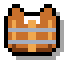 | Hazard vest | An orange vest with two silver bands. Worn in the Suit slot in Gear, where an EVA suit would go: hold it and tap Suit. It is cosmetic. The Station Engineer starts wearing one; spares are on the Engineering Hall rack and in the engineering closet. To go on EVA, hold the EVA suit and tap Suit: the vest is stowed in that hand. Everyone who can see you sees it on your sprite. | Engineering Hall (2), Transformer Room, in a closet in the EVA Airlock, Station Engineer's kit |
| Air tank (3/4) | Keeps you breathing where the air is thin (below 50 kPa), but only in the storage of a worn EVA suit: wear the suit, hold the tank and tap Suit storage in Gear. In a hand, pocket or backpack it gives nothing. It empties as you breathe thin air (about 5 minutes from full; the suit panel shows the time left) and an empty tank stays an empty tank: the air is the tank's own (full, three quarters, a half, a quarter, empty), so a fresh one is always full. Refill it (6 seconds) at the filling point in an EVA airlock or at the atmospherics tank filling station: a worn tank, or one held in the hand. Vacuum still crushes you unless you wear the EVA suit and helmet. | — | |
| Air tank (1/2) | Keeps you breathing where the air is thin (below 50 kPa), but only in the storage of a worn EVA suit: wear the suit, hold the tank and tap Suit storage in Gear. In a hand, pocket or backpack it gives nothing. It empties as you breathe thin air (about 5 minutes from full; the suit panel shows the time left) and an empty tank stays an empty tank: the air is the tank's own (full, three quarters, a half, a quarter, empty), so a fresh one is always full. Refill it (6 seconds) at the filling point in an EVA airlock or at the atmospherics tank filling station: a worn tank, or one held in the hand. Vacuum still crushes you unless you wear the EVA suit and helmet. | — | |
| Air tank (1/4) | Keeps you breathing where the air is thin (below 50 kPa), but only in the storage of a worn EVA suit: wear the suit, hold the tank and tap Suit storage in Gear. In a hand, pocket or backpack it gives nothing. It empties as you breathe thin air (about 5 minutes from full; the suit panel shows the time left) and an empty tank stays an empty tank: the air is the tank's own (full, three quarters, a half, a quarter, empty), so a fresh one is always full. Refill it (6 seconds) at the filling point in an EVA airlock or at the atmospherics tank filling station: a worn tank, or one held in the hand. Vacuum still crushes you unless you wear the EVA suit and helmet. | — | |
| Air tank (empty) | Keeps you breathing where the air is thin (below 50 kPa), but only in the storage of a worn EVA suit: wear the suit, hold the tank and tap Suit storage in Gear. In a hand, pocket or backpack it gives nothing. It empties as you breathe thin air (about 5 minutes from full; the suit panel shows the time left) and an empty tank stays an empty tank: the air is the tank's own (full, three quarters, a half, a quarter, empty), so a fresh one is always full. Refill it (6 seconds) at the filling point in an EVA airlock or at the atmospherics tank filling station: a worn tank, or one held in the hand. Vacuum still crushes you unless you wear the EVA suit and helmet. | — | |
| Seed pouch | A belt of eight slots for seeds, worn by the Botanist at the start: one seed of each of the first eight crops. Wear it from a hand like any belt; its slots take seeds only. | Botanist's kit | |
| Lab coat | A white lab coat. Worn in the Suit slot in Gear, where an EVA suit would go: hold it and tap Suit (it has no storage). It is cosmetic: everyone who can see you sees it on your sprite. The Medical Doctor starts wearing one; spares hang on a Medbay rack and in the Medbay closet. To go on EVA, hold the EVA suit and tap Suit: the coat is stowed in that hand. | Medbay, in a closet in the Medbay, Medical Doctor's kit, Scientist's kit | |
| Stethoscope | A doctor's stethoscope. Worn in the Head slot in Gear (hold it and tap Head); it hangs round the neck and everyone who can see you sees it. Worn, it gives the Listen button beside someone within reach (or Listen to yourself): after 3 seconds of keeping still (the Medical Doctor is twice as quick) a list for you alone says what the lungs and the heart sound like: lungs clear, wheezing (short of oxygen), crackling (a cold or the flu starting, even before any symptom shows), thick (one under way) or heavy (a toxin); a heartbeat steady, slow (unconscious or badly hurt), fast (exhausted or starving) or none (dead); and breathing in a suit. The Medical Doctor starts wearing one; spares are in the Medbay closet and on a Medbay rack. The EVA helmet takes the Head slot: the stethoscope is stowed in a hand. | Medbay, in a closet in the Medbay, Medical Doctor's kit | |
| Janitor belt | The Janitor's belt: 5 slots, any of them for a mop, a squeegee, a bucket, a box of lightbulbs or (where there is gravity) a wet floor sign. Worn from a hand like any belt (Belt in Gear); tap a slot above your hands to swap it with the hand in use. The Janitor starts with it on; the closet keeps spares. | Janitor's Closet (2), Janitor's kit | |
| Miner belt | The Miner's belt: 6 slots for the ore bag on its hook (the ore in the bag stays in it, and comes back into your hand with it), the hand drill, a flashlight and the first aid that fits a belt: a bandage, burn ointment or an epinephrine pen. Worn from a hand like any belt (Belt in Gear). The Miner starts with it on; the Mining Dock's rack keeps a spare. | Mining Dock, Miner's kit | |
| Dive suit | The one suit for the sea, worn on the body, from a hand: hold it and tap Suit in Gear. It seals on its own (its helmet is part of it) and has a slot for an air tank (tap Suit storage in Gear): only a tank there gives air, and a dive suit makes it last 8 minutes from full, not the 5 minutes of an EVA suit. It keeps out the cold of the sea and the flood of a room; it is made for 40 metres, and below that it squeezes you (2 damage every half second). Check it with Check the suit; refill the tank (6 seconds) at the Dive Lock or at the atmospherics filling station. Three hang in the Moon Pool Bay. It goes in neither a belt nor a backpack. | — | |
| Security belt | The Security Officer's belt: 6 slots for the stunner, the baton, the pepper spray, handcuffs and a flashlight (no radio). Worn from a hand like any belt (Belt in Gear), and the dark navy band with its gold buckle shows on your sprite. The Security Officer starts with it on, holding the stunner, the baton, the pepper spray, two pairs of handcuffs and a flashlight; a spare lies on the Security Office's shelf. Take an item off the belt into your hand to use it. | Security Office, Security Officer's kit | |
| Shielded visor | A shielded visor (built from sensor board and hull plate and sealing gasket), worn in the Glasses slot like welding goggles: it spares the eyes from the welder's arc (the EVA helmet and the dive suit do too). A prototype visor may craze under the arc and fall apart. | the Robotics bench, once the Shielded visor project is released |
Everything else
| Item | What it does | Where to get one | |
|---|---|---|---|
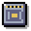 | Crate | A steel storage crate: it holds 8 slots of 8 like things, like the storage crates of the tunnels (Open crate, take out, Put in, Close), but it is movable. An order arrives in one, on the delivery pad. Pull it by hand, or Load it onto the cargo cart (three at most) and wheel it to the department that asked. An empty crate on the pad ships for 5 supply points at the supply console; one with things in it stays. Too big for a backpack; it can only be carried while empty. | Cargo Storage Bay (6) |
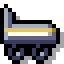 | Cargo cart | The Logistics cargo cart, parked in the Cargo Storage Bay. It cannot be picked up: tap it and Pull it, and it follows your steps one tile behind you, through the doors too (Release lets go). A crate beside you is put on it with Load crate (it carries 3 crates; the crates ride with it) and the last one is put down beside the cart with Unload crate. The things in a crate on the cart cannot be reached: unload it first. Deliver an order by wheeling the cart to the department and unloading the crate there; whoever asked opens it and takes their things out. | Cargo Storage Bay |
| Metal scrap | Metal scrap, what the recycler makes of a tool, plate, cell or tank. It rides the conveyor belt from the recycler into the refinery's hopper by itself; or load it by hand like ore. Smelting a piece (6 seconds) gives a hull plate, so a bin of broken tools comes back as plates. | — | |
| Glass shards | Glass shards, what the recycler makes of bulbs, goggles, syringes and bottles. They land on the floor beside the recycler, not on the belt. Nothing in the game uses them yet; they are the Janitor's to sweep up and Cargo's to export. | — | |
| Plastic pellets | Plastic pellets, what the recycler makes of everything that is neither metal nor glass, food scraps and paper included. They land on the floor beside the recycler, not on the belt. Nothing in the game uses them yet; they are Cargo's to export. | — |
Supply orders cost supply points and land on the pad in the cargo bay 40 s after their approval (20 s when Logistics approves them), one at a time; see How to play.